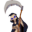

Discworld IIDetalles
 |
|
| Tiempo de juego | 54s |
| Última actividad | 11/11/2025 8:01:22 |
| Añadido | 10/11/2025 20:33:36 |
| Modificado | 10/12/2025 11:26:05 |
| Estado de finalización | Jugado |
| Librería | Playnite |
| Fuente | |
| Plataforma | PC (Windows) |
| Fecha de lanzamiento | 30/11/1996 |
| Puntuación de la Comunidad | 88 |
| Puntuación de la Crítica | |
| Puntuación de usuario | |
| Género | Adventure Point-and-click |
| Desarrollador | Perfect Entertainment |
| Editor | Psygnosis Sega |
| Característica | Single Player |
| Enlaces | |
| Tag | |
Descripción
F1: Menú
Preparate para volver a Ankh-Morpork, pero esta vez, con un presupuesto zarpado. Discworld II es una de las aventuras gráficas más lindas, graciosas y mejor hechas de la historia.
La trama es una genialidad: LA MUERTE (el esqueleto copado que HABLA EN MAYÚSCULAS) se borró. Se tomó el palo. Está de vacaciones forzadas. ¿El problema? Nadie se puede morir. La ciudad es un quilombo de gente que debería estar muerta y no lo está. Y obvio, ¿a quién le tiran el fardo para que lo encuentre? Al mago más cobarde e inútil del universo: Rincewind.
Esto es la perfección del "point and click" de humor:
- ¡PARECE UNA PELÍCULA!: En serio. Los gráficos. Esto es animación 2D dibujada a mano, nivel un largometraje. El salto de calidad con el 1 es una locura.
- PUZZLES QUE TIENEN SENTIDO: ¡Aleluya! Siguen siendo puzzles raros (¡es Mundodisco!), pero tienen una lógica interna. No vas a querer revolear el monitor. Te hace sentir un genio, no un nabo.
- Humor Nivel Dios: Sigue siendo Terry Pratchett puro, y la voz de Rincewind la sigue haciendo el puto amo Eric Idle (de Monty Python). Cada línea de diálogo es oro.
- Elenco Zarpado: Vuelven todos los grosos. El Equipaje (con sus patitas), El Bibliotecario (¡OOK!), la Muerte de las Ratas, Vimes... es un lujo.
Una obra maestra. Te vas a cagar de risa de punta a punta y vas a disfrutar de una aventura que fluye como tiene que ser. Un 10 absoluto.